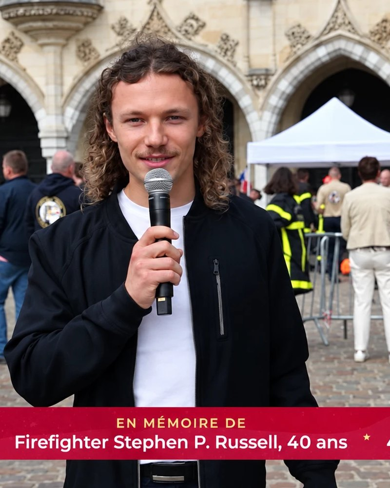
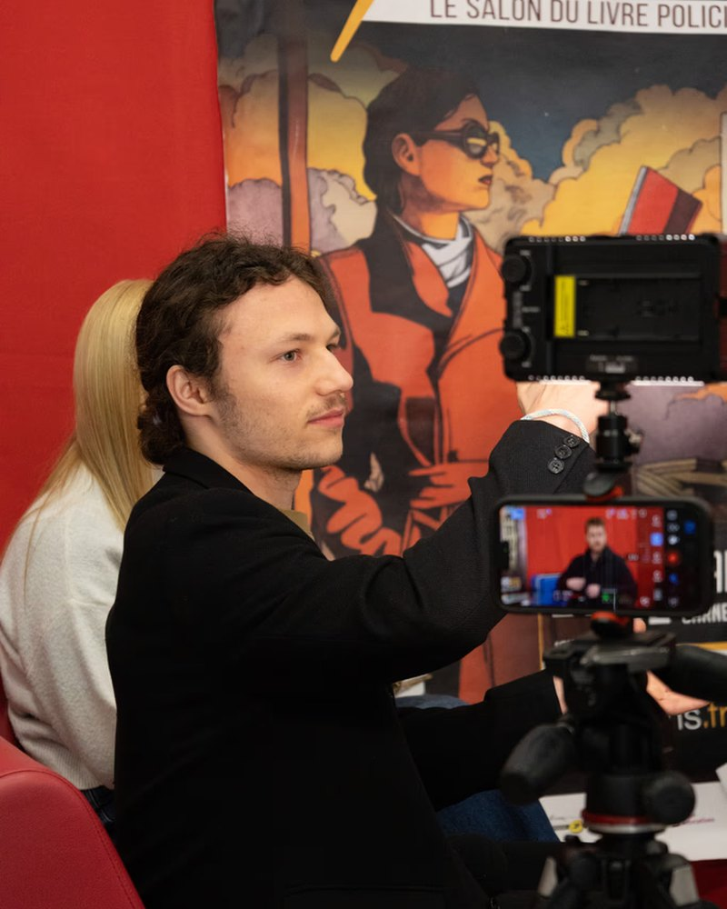
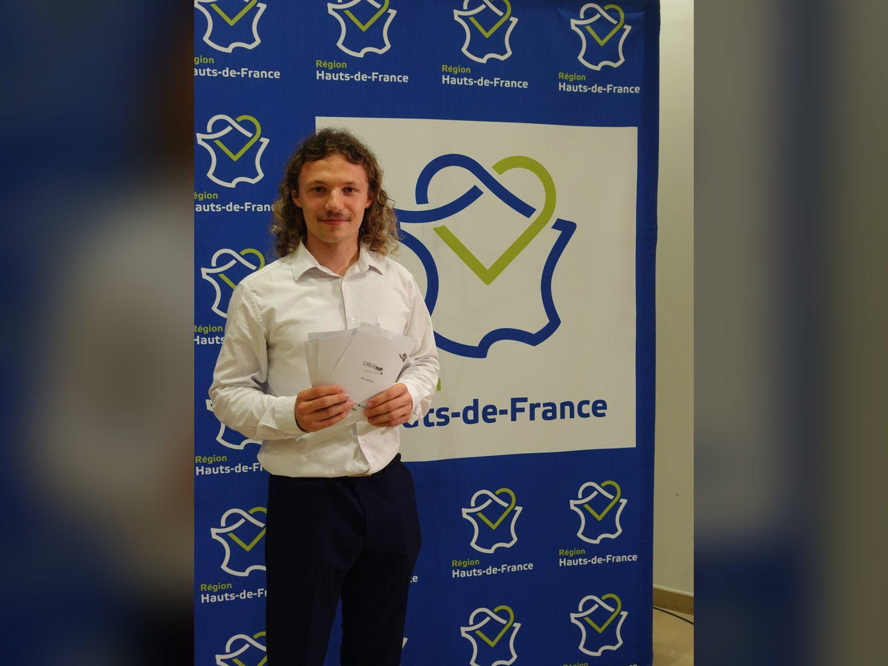
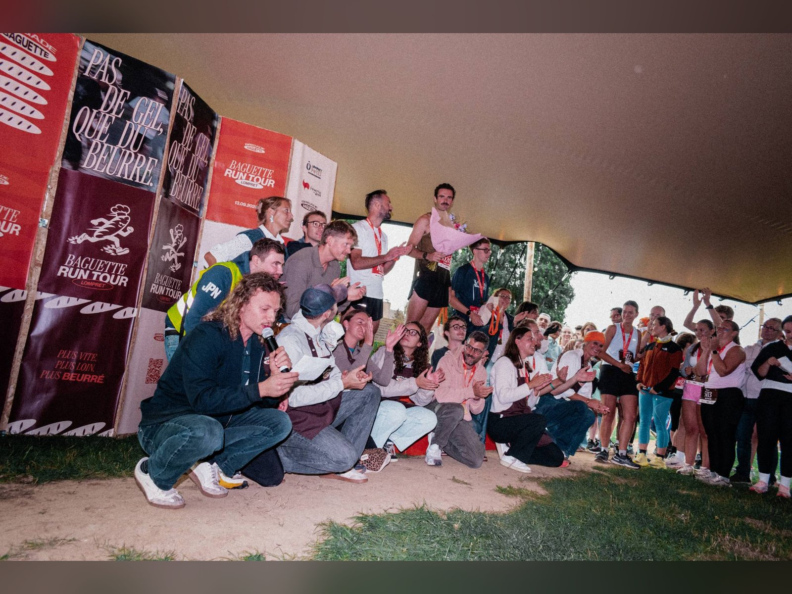
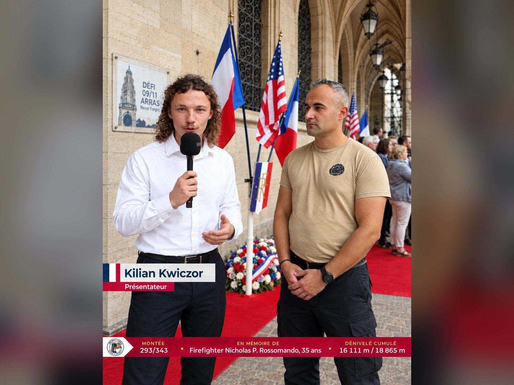
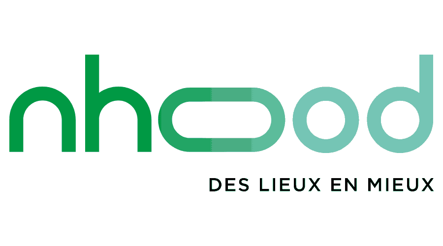
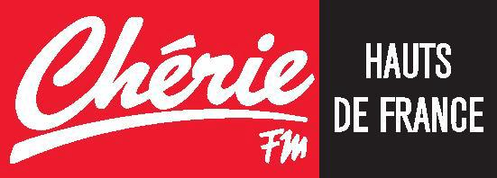

Animateur / Présentateur d'événements
Maître de cérémonie · j'incarne votre événement et garde le public attentif, du premier mot à la conclusion.
Basé à Lille · Disponible partout en francophonie
Les événements que j'anime
Remises de prix

Diffusion en direct
Événements institutionnels

Tables rondes
Activations marketing
Bande démo
Derniers événements
Remise de prix

Région Hauts-de-France
Remise de prix CRÉA'Sup
Cérémonie de remise de prix du concours étudiant CRÉA'Sup, en partenariat avec la Région Hauts-de-France.
Speaker · Course

Baguette Run Tour · Lompret
Speaker de la Baguette Run Tour
Speaker de la première édition de la course : animation du public, de la ligne de départ à la remise des prix.
Institutionnel · Direct

Grand-Place d'Arras
Cérémonie du 11 septembre — Défi 09/11
Animation de la cérémonie commémorative sur la place, avec une prise de parole également diffusée en direct.
Des interventions pour des clients variés


Une intervention préparée, pas seulement animée
Une préparation qui sécurise le conducteur
En amont, j'identifie les moments clés, les transitions, les messages prioritaires et les éventuelles zones de risque. Le jour J, chaque intervention trouve sa place sans alourdir le programme.
Une présence adaptée à votre marque
Ton institutionnel, énergie sportive ou proximité grand public : j'ajuste mon niveau d'incarnation au public, au format et à l'identité de l'événement.
Une gestion fluide du direct
Retard d'un intervenant, changement de programme ou problème technique : je maintiens l'attention du public pendant que les équipes règlent la situation en coulisses.
Une présence visible le jour J, un travail précis en amont
01
Cadrage
Objectifs, public, tonalité, messages clés, intervenants et contraintes techniques du lieu.
02
Préparation éditoriale
Construction des transitions, préparation des interviews, appropriation du conducteur et anticipation des imprévus.
03
Présentation le jour J
Conduite du rythme, valorisation des prises de parole et adaptation en direct jusqu'à la conclusion.
Les questions qui reviennent
Mon prix n'est pas fixe. Il varie en fonction de différents paramètres : (type d'animation, temps d'intervention, technicité du sujet… Afin d'établir un devis il faut avant tout discuter de votre projet pour que l'enjeu soit bien compris et seulement à partir de là, j'établirai le devis.
Je privilégie une prise de parole naturelle, préparée à partir du conducteur, des messages clés et des informations validées avec l'équipe. Lorsque certains passages nécessitent une formulation précise — noms, titres, protocole, messages de marque ou mentions réglementaires — je respecte naturellement le script fourni.
Oui. Je peux assurer la préparation et la conduite d'une cérémonie : transitions entre intervenants, remises de prix, interviews et respect du timing. Mon rôle est de donner de la cohérence à l'ensemble tout en valorisant chaque prise de parole.
Oui. Les imprévus font partie de chaque événement. Mon rôle est de maintenir le rythme et de rediriger l'attention du public pendant que les équipes règlent la situation en coulisses : le direct reste fluide, la tension ne se voit pas.
Oui, c'est possible selon mes disponibilités et l'importance de l'événement. Le mieux est d'en discuter lors d'un appel.
Écrivez-moi via la page contact en précisant le format, le public et les enjeux de votre événement, ou joignez-moi sur LinkedIn ou Instagram.
Parlons de votre prochain événement
Un échange de 20 minutes pour comprendre le format, le public, les enjeux et les conditions d'intervention.
Planifier un échange